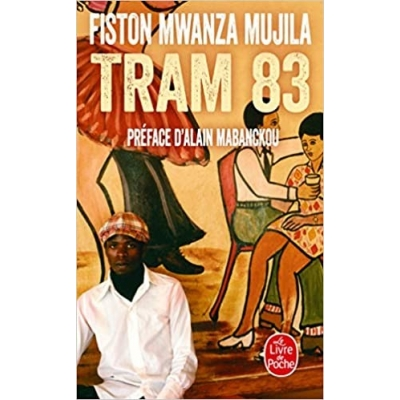
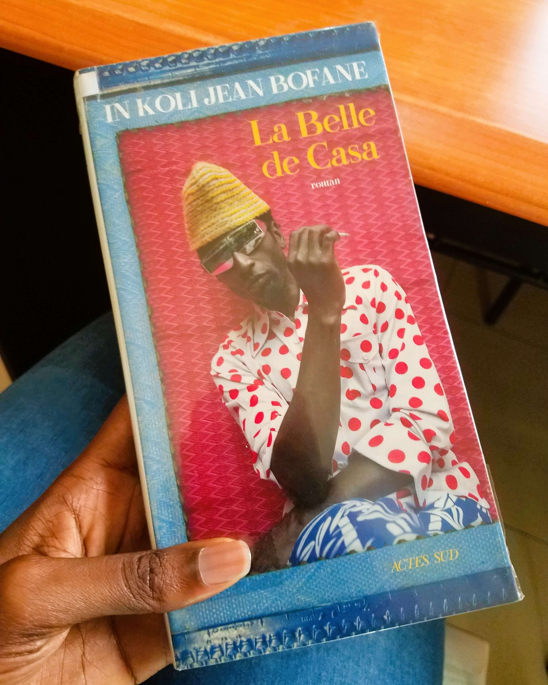
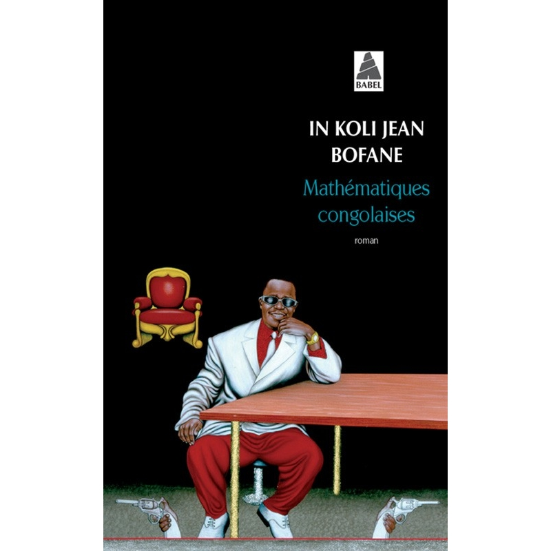
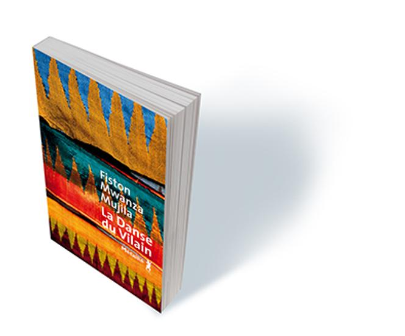

Le fil conducteur
Une autre façon de choisir
Quatre romans composent ce premier parcours autour des imaginaires urbains et des écritures contemporaines.
Parcourir toute la bibliothèqueParcours thématique · Villes & nuits
Des histoires urbaines portées par la musique, l’énergie des lieux et les rencontres. Cette sélection réunit des romans associés à des imaginaires contemporains.
Le fil conducteur
Quatre romans composent ce premier parcours autour des imaginaires urbains et des écritures contemporaines.
Parcourir toute la bibliothèqueDans ce parcours
4 œuvres à découvrir

Roman · 2014
Fiston Mwanza Mujila
Une œuvre portée par l’énergie d’une ville et de ses nuits.
Découvrir le livre
Roman · 2018
In Koli Jean Bofane
Un autre regard romanesque signé In Koli Jean Bofane.
Découvrir le livre
Roman · 2008
In Koli Jean Bofane
Une fiction contemporaine à découvrir dans le catalogue.
Découvrir le livre
Roman · 2020
Fiston Mwanza Mujila
Un roman de Fiston Mwanza Mujila.
Découvrir le livrePoursuivre la découverte
Retrouvez les autres collections et les œuvres de la bibliothèque Mikanda.